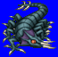
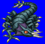
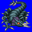
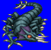

Length: 30-200 cm Weight: 60-400 lbs.
Habitat: Desert Origin: Libya
Meaning: Greek for "little king"
First mentioned in literature that dates back to the first century A.D., the basilisk is likened to a small- to medium-sized snakelike creature. Its poison is said to be so potent that stone shatters, and birds instantly drop to the gound when stricken. Furthermore, when humans puncture the basilisk with a spear, the poison is said to be so strong that it is transmitted through the spear to its wielder. In the middle ages, a birdlike form of the same creature, the cockatrice, was first mentioned. It eventually became known as a quadrapedal, chickenlike creature with many of the same attributes as the basilisk.
See also: Cockatrice